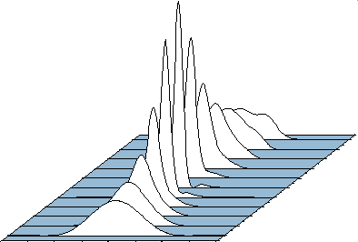

Research fields:
non linear optics and lasers.
I'm mainly interested in my research in fundamental and applied aspects of optics/non linear optics, mainly the dynamics of laser systems and the study of non linearities induced by laser in transparent materials.
My research interests (fundamental and applied) can be summarized in the following points:
- Optic fibre systems,
- Non linear and dissipative systems dynamics,
- Interactions of a large number of dissipative solitons,
- Development of control methods in optical systems,
- Making and optimisation of ultra-short sources and multi-pulse lasers,
- Controlling the temporal dynamics of the laser via the optical spectrum,
- Laser source – matter Interaction,
- Study of non-linearities in glasses,
- Kinetics of photo-induced grating.
